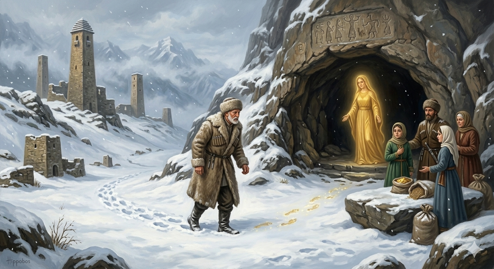

И.А. Дахкильгов. Хьехаме дувцарш - поучительные рассказы-притчи.
И.А. Дахкильгов. Хьехаме дувцарш - поучительные рассказы-притчи. Из ингушского фольклора.

Беркат юхадерзарах
Ӏай, сецца ший цӀагӀара араваьннача къонахчоа бӀаргаейнай цӀагӀара дӀайолха лараш. Юха цӀенах хьаласташ хиннаяц уж. Дезалхоех цхьа саг тӀерваьнна а хиннавац. Малав-те ер дӀавахар, аьнна, ларагӀа ваха къонах цхьан хьагӀара тӀакхаьчав. ДӀачукхайкхав: - ЦаӀ дӀавахав са цӀагӀара, малав а хац. Дезалхой берригаш цӀагӀа а ба. Фуд ер? ХьагӀара боадонах оаз хьахезай: - Со да из. Беркат да со, хьона эгӀаз дахарах хьа цӀагӀара дӀадаха. Хьо сона тӀехьавенавар аьнна, со юхадерзаргдоацалга халахь. ХӀаьта а ше чӀоагӀа хала вахаш миска саг ва, боккъала юхадерзадалара хьо, яхаш, Беркатага дийхад цо. ТӀаккха аьннад Беркато: - Сона тӀехьавена Ӏа къахьегарах аз цхьа дика лургда хьона. ДӀадеха, эше, дошо, безе, боккха боахам, эше, могашал, - моллагӀа цаӀ деха, бакъда, со юха хьай цӀенах кхетар ма деха. Уйла а яь, аьннад къонахчо: - Дукха хьаькъала да вац со. Ӏа бокъо лоре, цӀагӀарчарца дагаваргвар со. Беркатас бокъо а енна, цӀагӀарчарга дӀадийцад цо ший Беркатаца хинна къамаьл. ЦӀагӀарчарех дошо деха, оалаш хиннад цхьаболчар, ялат деха оалаш хиннад кхычар. ХӀаьта зӀамагӀча несас аьннад: "Вайна барт бийхача бакъахьа бар, из ца хуле, цхьаккха кхыдола хӀама хайра хургдац вайна". Цу дешашта раьза а хинна, Беркат дагӀача хьагӀара чу вахав из къонах. Циггач ший дезала барт бийхаб цо. ТӀаккха аьннад йоах Беркато: - Ӏехадир оаш со. Барт лу аз шоана. ХӀаьта барт болча со а хила дезаш да. Цудухьа юхадерз со. Цу ханара денна оалаш да: "Барт болча - беркат".
РУССКИЙ
Возвращение Благодати
Некто проснулся утром, вышел во двор и увидел, что по свежевыпавшему снегу идут следы из его дома, но во двор следы не вели. Задумался он и стал гадать: что бы это могло быть? Решив выяснить, отправился по следу, который и привел его к пещере. Он крикнул в нее: - Не оставляя следов к моему дому, но оставляя их, покидая мой дом, кто-то ушел. Кто же он? Какой-то голос ему ответил: - Это я, Благодать, которая рассердилась на тебя и покинула твой дом. Зря ты трудился и пришел за мною. Тогда человек начал очень просить ее вернуться, говоря, что он очень обездоленный человек и без Благодати пропадет. Благодать ответила: - За то, что ты потрудился и пришел за мною, я дам тебе что-нибудь другое, что пожелаешь сам или твоя семья, но не проси меня вернуться к тебе. Подумал человек и сказал: - У меня мало ума. Если ты позволишь, я посоветуюсь дома. Благодать согласилась. Он вернулся домой и все рассказал. Ему стали советовать попросить кто золота, кто зерна. Младшая же сноха сказала: "Попроси нашей семье согласия (барт): там, где его нет, ничего и не будет". Послушал он ее и пошел в пещеру, где у Благодати попросил согласия своей семье. И тогда Благодать сказала: - Обхитрили вы меня. Даю вам согласие, а где согласие, там должна быть и я, поэтому возвращаюсь к вам. Благодати не бывает там, где между людьми нет согласия.
ENGLISH
The Return of Grace
One morning, a man woke up, went out into the yard and saw footprints in the freshly fallen snow leading away from his house. Pausing to think, he began to wonder what it could be. Deciding to find out, he followed the trail, which led him to a cave. He called out into it: "Leaving no footprints on the way to my house yet leaving them on the way out, someone has been here." Who is it?" A voice answered him, 'It is I, Grace, who became angry with you and left your house. You have toiled in vain, coming here to look for me." The man then began to beg her earnestly to return, saying that he was very poor and would die without her. Grace replied, 'For the trouble you have taken to come for me, I will give you something else that you or your family may desire, but do not ask me to return to you.' The man thought for a moment and said: 'I'm not very clever. If you'll allow it, I'll consult with my family at home.' Grace agreed. He returned home and told them everything. Some advised him to ask for gold, while others said he should ask for grain. But his youngest daughter-in-law said: "Ask for our family's consent (bart): where there is none, there will be nothing." He took her advice and went to the cave, where he asked Grace for his family's consent. Grace then said, 'You have outwitted me. I grant you my consent. Where there is consent, I must be there too, so I am returning to you." Grace is not found where there is no consent among people.
НОХЧИЙН
Беркат йухадерзарх
Ӏай, сатосуш шен цӀера араваьллачу къонахчун бӀаьрга йайна цӀера дӀайоьлху лараш. Йуха цӀенах схьайогӀуш хилла йац уьш. Доьзалхойх цхьа стаг цӀера ваьлла а хилла вац. Мила ву-те хӀара дӀавахнарг, аьлла, ларца вахна къонах цхьана хьехе тӀекхаьчна. ДӀачукхайкхина: - Цхьаъ дӀавахна сан цӀера, мила ву а хаац. Доьзалхой берриге цӀахь а бу. ХӀун ду хӀара? Хьехера боданах аз схьахезна: - Со ду иза. Беркат ду со, хьуна оьгӀаздахна хьан цӀера дӀадахна. Хьо суна тӀе схьавеан вар аьлла, со йухадоьрзур доцийла хаалахь. ХӀетте а ша чӀогӀа хала вехаш миска стаг ву, боккъал йухадерзахьара хьо, бохуш, Беркате дехна цо. ТӀаккха аьлла Беркато: - Суна тӀесхьавеан ахь къахьегарх ас цхьа дика лур ду хьуна. ДӀадеха, эшахь, деши, безахь, боккха бахам, эшахь, могашалла, - муьлха а цхьаъ деха, бакъду, со йуха хьайн цӀенах кхетар ма деха. Ойла а йина, аьлла къонахчо: - Дукха хьекъалан да вац со. Ахь бакъо лахь, цӀерчаьрца дагавер вар со. Беркатас бакъо а йелла, цӀерчаьрга дӀадийцина цо шен Беркатаца хилла къамел. ЦӀерчарах деши деха, олуш хилла цхьаболчар, йалта деха олуш хилла кхечар. ХӀета жимачу несо аьлла: "Вайна барт бийхича бакъахь бар, иза ца хилахь, цхьа а кхин долу хӀума хайр хир дац вайна". Цу дешнашна реза а хилла, Беркат дагӀанчу хьехан чу вахна и къонах. Цигахь шен доьзалан барт бехна цо. ТӀаккха аьлла бох Беркато: - Ӏехадир аш со. Барт ло ас шуна. ХӀета барт болчехь со а хила дезаш ду. Цундела йухадоьрзу со. Цу хенара дуьйна олуш ду: "Барт болчехь - беркат".
ПОГОВОРКИ
Барт болчча соц беркат. Благодать нисходит туда, где есть согласие.Барт ийгӀача коа дикадар денадац. В семью (двор), в которой нет согласия, добро не приходит.БӀарга дезаденнар – сайранга кхаччал да, дега дезаденнар – валлалца да. Что любо глазу, то до вечера; что любо сердцу, то на всю жизнь.Дезал дика – беркат дукха. Хороша семья – много благодати в доме.Дезала доккхагӀа дола рузкъа – барт хилар. Главное богатство семьи во взаимном согласии.Дезала ираз-беркат барт-безамах доал. Счастье и благополучие семьи – в любви и согласии.Дошол дикагӀа ба цӀагаӀара тоам (барт). Согласие в семье лучше золота.Ка ца йоала тӀом беций барт ийгӀа дезал. Семья без согласия, что поражение в бою.Сардамаш доахача цӀагӀара беркат дӀадахад. Благодать покидает дом, в котором звучат проклятия.ЦӀагӀа барт бале, гаьннарча наькъагӀа ваха мегаргва. Если в доме согласие, то можно смело идти в дальний путь.Ший ираз эггар хьалха саго ше лораде деза. Прежде всего, человек сам должен оберегать свое счастье.Шоайла вӀаший хьаьрчача, кулгашта а йӀайхагӀа хул. И рукам теплее, когда они вместе.